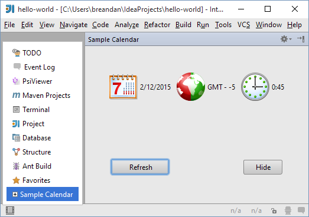

Tool Windows
Tool Windows
Tool windows are child windows of the IDE used to display information. These windows generally have their own toolbars (referred to as tool window bars) along the outer edges of the main window containing one or more tool window buttons, which activate panels displayed on the left, bottom and right sides of the main IDE window. For detailed information about tool windows, please see IntelliJ IDEA Web Help and Tool window topic in Consulo UI Guidelines.
Each side contains two tool window groups, the primary and the secondary one, and only one tool window from each group can be active at a time.
Each tool window can show multiple tabs (or "contents", as they are called in the API). For example, the Run tool window displays a tab for each active run configuration, and the Changes/Version Control tool window displays a fixed set of tabs depending on the version control system used in the project.
There are two main scenarios for the use of tool windows in a plugin. Using declarative setup, a tool window button is always visible, and the user can activate it and interact with the plugin functionality at any time. Alternatively, using programmatic setup, the tool window is created to show the results of a specific operation, and can be closed by the user after the operation is completed.
Declarative Setup
The tool window is registered in plugin.xml using the com.intellij.toolWindow extension point.
The extension point attributes specify all the data which is necessary to display the tool window button:
-
The
idof the tool window (corresponds to the text displayed on the tool window button) -
The
anchor, meaning the side of the screen on which the tool window is displayed ("left" (default), "right" or "bottom") -
The
secondaryattribute, specifying whether the tool window is displayed in the primary or the secondary group -
The
iconto display on the tool window button (13x13 pixels, see Working with Icons and Images)
In addition to that, specify the factoryClass attribute - the name of a class implementing the ToolWindowFactory interface.
When the user clicks on the tool window button, the createToolWindowContent() method of the factory class is called, and initializes the UI of the tool window.
This procedure ensures that unused tool windows don't cause any overhead in startup time or memory usage: if a user does not interact with the tool window, no plugin code will be loaded or executed.
If the tool window of a plugin doesn't need to be displayed for all projects:
* For versions 2020.1 and later, also implement the isApplicable(Project) method.
* For versions 2019.3 and earlier, also specify the conditionClass attribute: the FQN of a class implementing Condition<Project>, which can be the same class as the tool window factory implementation.
Note the condition is evaluated only once when the project is loaded; to show and hide a tool window dynamically while the user is working with the project use the second method for tool window registration.
To provide a localized text for the tool window button, specify matching toolwindow.stripe.[id] message key (escape spaces with _) in your message bundle (code insight supported in 2020.3 and later).
Programmatic Setup
The second method involves simply calling ToolWindowManager.registerToolWindow() from the plugin code.
The method has multiple overloads that can be used depending on the task.
When using an overload that takes a component, the component becomes the first content (tab) displayed in the tool window.
Contents (Tabs)
Displaying the contents of many tool windows requires access to the indices.
Because of that, tool windows are normally disabled while building indices unless the ToolWindowFactory implements DumbAware. For programmatic setup, parameter canWorkInDumbMode must be set to true in calls to registerToolWindow().
As mentioned previously, tool windows can contain multiple tabs, or contents.
To manage the contents of a tool window, call ToolWindow.getContentManager().
To add a tab (content), first create it by calling ContentManager.getFactory().createContent(), and then to add it to the tool window using ContentManager.addContent().
A plugin can control whether the user is allowed to close tabs either globally or on a per-tab basis.
The former is done by passing the canCloseContents parameter to the registerToolWindow() function, or by specifying canCloseContents="true" in plugin.xml.
The default value is false; calling setClosable(true) on ContentManager content will be ignored unless canCloseContents is explicitly set.
If closing tabs is enabled in general, a plugin can disable closing of specific tabs by calling Content.setCloseable(false).
Sample Plugin
To clarify how to develop plugins that create tool windows, consider the toolWindow sample plugin available in the code_samples directory of the SDK documentation. This plugin creates the Sample Calendar tool window that displays the system date, time and time zone.
To run the toolWindow plugin
- Start IntelliJ IDEA and open the tool_window project saved into the code_samples/tool_window directory.
- Ensure that the project settings are valid for the environment. If necessary, modify the project settings. To view or modify the project settings, open the Project Structure dialog.
- Run the plugin by choosing the Run | Run on the main menu. If necessary, change the Run/Debug Configurations.
The plugin creates the Sample Calendar tool window. When opened, this tool window is similar to the following screen:
